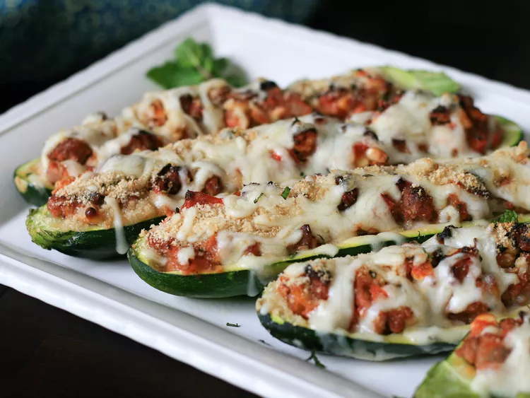

Mediterranean Stuffed Zucchini

Description
Here's a delicious way to solve the problem of those too-big zucchini ballooning in your garden at the end of the summer: zucchini boats baked and stuffed with lamb, feta, pine nuts, tomatoes, and other Mediterranean flavors!
Ingredients
- 1 extra large zucchini, halved lengthwise
- 1 tablespoon olive oil
- 1 sweet onion, chopped
- 1 tablespoon chopped garlic
- 1 pound ground lamb
- coarse salt to taste
- ground black pepper to taste
- 1 (16 ounce) can tomato sauce
- 2 tomatoes, chopped
- ¾ cup crumbled feta cheese
- ½ cup pine nuts
- ¼ cup mint leaves
- ¼ cup water
- ¼ cup mint leaves
- ¾ cup seasoned bread crumbs
- ¾ cup shredded mozzarella cheese